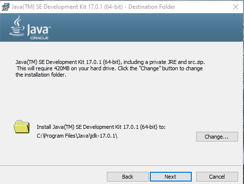
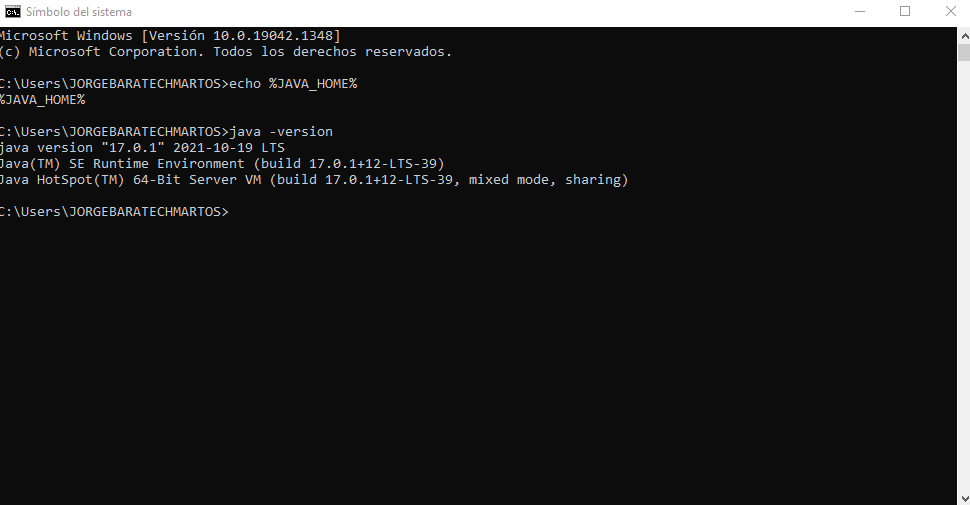

La version que se a instalado en el equipo es la de kit 17.0.1
La via por la que se a instalado es la programas, files java jdk 17.0.1
Se entra en el editor de las variables de entorno se le da a variables de entorno
se le da a nueva y se crea la java home, despues se le da a bath editar y cras ahi la java home
despues se va a cmd y se comprueva si esta correcto
